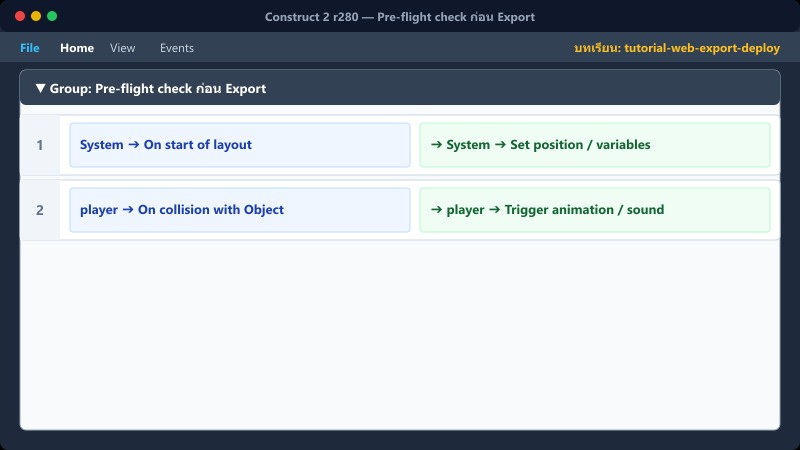
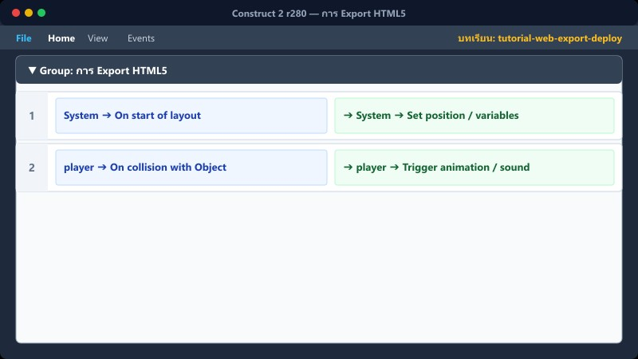
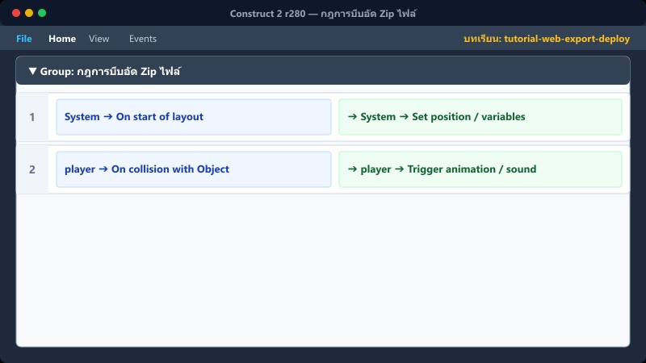

📦 Export HTML5 Website (Zip / Folder)
🌐 Deploy to Kampai School Portal
File ➔ Export→เลือก HTML5 Website→ตรวจไฟล์ Build→ลงคลังสื่อ Kampai→เปิดเล่นบนเว็บ
1Pre-flight check ก่อน Export


ตรวจสอบความเรียบร้อยของโปรเจกต์
- ห้ามมี UID ซ้ำซ้อนกันในฉาก
- First layout (ใน Project Settings) ต้องเป็น title
- กด F5 ทดสอบเล่นให้จบ 1 รอบ
📍 ที่ไหนใน C2: Project Properties
2การ Export HTML5

เลือก Export เป็น Website
File → Export project → HTML5
ปิดการ Minify ถ้ามีปัญหา Script Error บนเว็บ
📍 ที่ไหนใน C2: File → Export project → HTML5
3กฎการบีบอัด Zip ไฟล์

เส้นทางไฟล์สำคัญมาก
ข้อควรระวัง: ระบบภายใน ZIP หรือ Server ต้องใช้ Forward Slashes ( / ) สำหรับ Path เสมอ ห้ามใช้ Backslashes ( \\ )
📍 ที่ไหนใน C2: File → Save as (ถ้าส่ง .capx)
4⚠️ Preview กับ Export ไม่เหมือนกัน!

ฟีเจอร์บางอย่างทำงานต่างกัน
TextBox: บนมือถือตอน Export อาจบังจอ ต้องทดสอบจริง
Audio: เบราว์เซอร์บังคับให้ต้องมีการสัมผัส (Touch) ก่อนเสียงจึงจะดัง
วิธีแก้: บังคับให้ผู้เล่นต้องกดปุ่ม "Start" ก่อนเข้าเกมเสมอ
📍 ที่ไหนใน C2: เบราว์เซอร์จริง